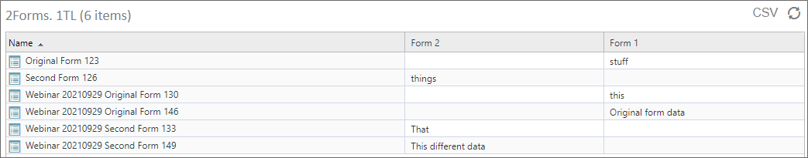
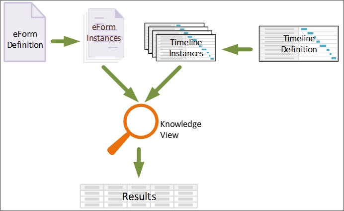
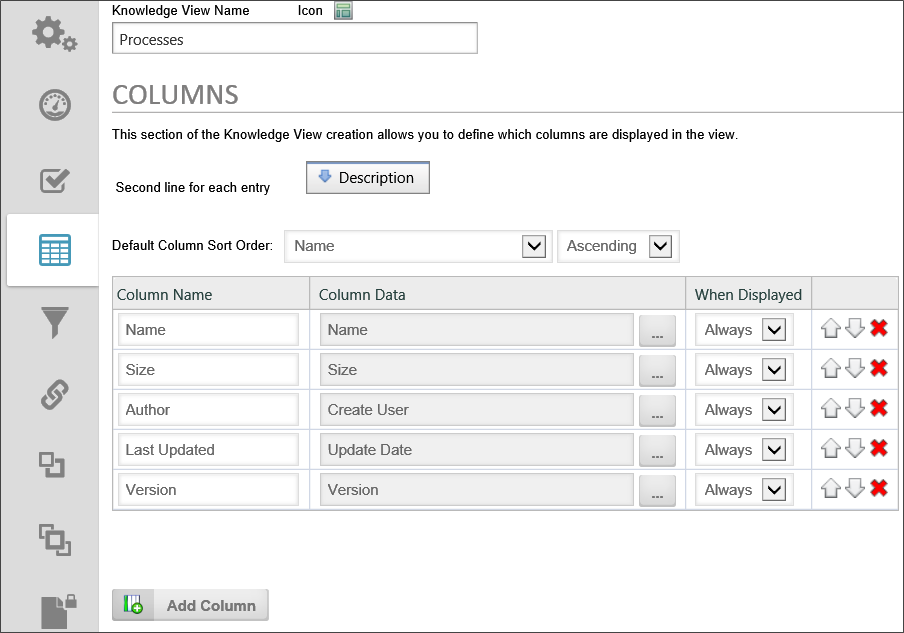
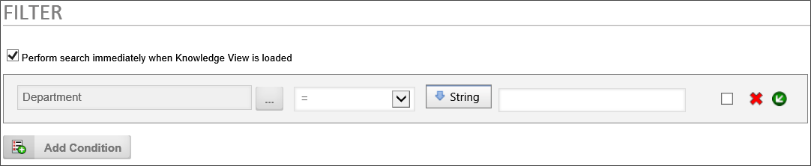

Process Director provides you with a convenient way to find and list information called Knowledge Views, or KViews, for short. The Knowledge View can display all types of information stored in Process Director, such as Forms, Process Timelines, Attachments, documents, etc.
Knowledge View definitions are stored in Process Director and provide a “window” into the database showing related information. These are similar to predefined searches. Knowledge Views form the foundation for intelligent navigation, searching, reporting, retrieval, and ultimately delivery of information to the user community. A Knowledge View allows authenticated or anonymous users to navigate and retrieve related information based on the data classification.
Knowledge Views will display all matching documents, Forms, processes, etc. based on the criteria specified. Knowledge View definitions can also be created that will prompt users for input information to locate information faster.

Knowledge Views also provide the foundation for the reporting component. The results of a search can:
To understand how Knowledge Views work, we must first understand what Process Director does with definition objects like Form definitions, Process Timeline definitions, etc. The definition object contains no actual data, but merely defines what data will be stored. For example, the Form definition describes the data fields that the user will fill out to enter data. Similarly, the Process Timeline definition describes when activities will start and end, or when a user task will become due, based on when the process begins.
Regular, non-administrative users never interact with any of the definition objects directly. Instead, when a user wants to, say, fill out a Form, The Form definition makes a copy of itself, called an instance, that the user will fill with data in the fields specified in the Form definition. This instance object is what actually contains the data entered by the user. If ten different people fill out a Form, Process Director creates an instance for each person, so that there are ten instances of the Form, each of which contains the data filled out by one of the ten users.
By the same token, when a user submits a Form that initiates a Process Timeline, a new instance of the Process Timeline definition is created that stores the information about that specific run of the process. The whole purpose of the definition object is to describe the instance objects that are created to interact with the user.
Let's take a closer look at an example of the Process Timeline definition and a Process Timeline instance. When the definition is created, we might define a user Activity as being due three days after the Activity starts. When we create the definition, we obviously don't know when the Activity will start. All we know is that, whenever the Activity starts, we want the Activity to become due in three days. When a user submits the Form that starts the process, Process Director creates an instance of the Process Timeline that contains the actual Activity dates for that specific run of the process. So, in our example, if the Activity begins on January 1st, the Process Timeline instance that is created will set the due date for the Activity as January 4th.
When we search for information in Process Director, we really don't care much about the definition objects, because they don't contain the data. While there are other, more complicated scenarios for using Knowledge Views, we are usually interested in searching through all of the existing instances of a Form or process to find specific data. We might, for instance, want to search for all timeline activities that are due in the next week, or for all Forms that were submitted by a specific person.

Knowledge Views display information in a tabular format, much like a spreadsheet. So much so, in fact, that the Knowledge View results can be exported directly to CSV or Excel format.
When constructing a Knowledge View, you select the columns that you wish the Knowledge View to display. The columns can consist of any system variable, such as Form fields, Business Rule results, Process Timeline values, and much more.

You can also choose to see different types of objects in the results. You can search for Forms, Process Timeline instances, Business Rules, documents, or any other type of Process Director object. You can select any number of object types to return, as well. The ability to return results containing any system variable from any type of Process Director object makes Knowledge Views very powerful.
Adding to that power is the filtering capability of Knowledge Views. Just as you can make a Knowledge View column out of any system variable, you can also filter every column to return only specific results.
While Knowledge Views are very powerful, you should also be aware that they can degrade server performance in some cases:
These problems are exacerbated when the KView returns many rows. In Process Director v3.21 and above, Knowledge Views default to return a maximum 100 avoid performance issues. There is also an additional option that enables the user to get a message if the number of rows returned will be greater than the maximum. BP Logix also implements logic to improve the performance of the SQL generation of some Knowledge Views, to use information about the data returned to speed the query.
For users of Process Director v4.06 and higher, a performance improvement can be made to a Knowledge View when searching for form data on systems with millions of rows. There is an optional custom variable, nLimitSearchToChars, that limits the number of characters to be searched in a form field.
In general, you should structure Knowledge Views to use as few columns, and return as few rows as possible to accomplish your purpose. In most cases, there is little to be gained in returning hundreds of rows in a "catch-all" Knowledge View. Such a Knowledge View simply has too much information to be useful in most cases, takes too long to generate, and takes too long for the user to parse through to find specific information.

Process Director is usually installed with Microsoft SQL Server as the back-end database. SQL Server is capable of returning hundreds of thousands or even millions of records in an instant; however, returning a large volume of rows resulting from a single query isn't what Knowledge Views are designed to do. Knowledge Views generate information for human consumption; humans don’t ordinarily want to view that many rows. Instead, Knowledge Views are optimized to make it very easy to build or modify searches and tabular reports without having to code any SQL at all. Knowledge Views are, in that sense, general purpose wizards that automatically generate sets of potentially highly complex queries while hiding the nasty details of how those queries are actually constructed.
As a result, the performance of a Knowledge View isn't only related to the number of rows being returned, but even more by the number of queries required to construct the columns displayed in each row. So while the database might, for example, easily handle a single join resulting in a lot of rows, what the KView is actually constructing is one query to generate the underlying rows, and then another X queries per row to fill in the additional information configured by the user for each column in that Knowledge View. The total number of queries puts a larger load on the database than the single complex query that obtains the initial list of matching objects/rows.
And so, Knowledge Views represent a purposeful trade-off between design-and-build costs and execution time. In the vast majority of cases this is an optimal approach, making it very easy to generate tables of a few dozen or a few hundred rows for human consumption. This approach may be less than optimal, however, for returning a large number of Knowledge View rows.
There are definitely business cases for returning a large number of rows through Knowledge Views, and at BP Logix, we generally respond to such requests as follows:
What we want to do is identify the places where a large amount of rows are needed to be returned. For each of these Knowledge Views we should understand the reasons for the number of records being returned and then we can recommend other approaches. For example, some KViews may be replaced with the reports (which are capable of many more rows because we have control over the SQL sent to the DB), others may be needed because they are exporting to XLS and that could be a different KView or something scheduled nightly and email the XLS to the user. There are different approaches and steps to take, but the first step is to understand what the business reason is behind each KView returning so many records. As part of this it would also be important to know close to real-time this data has to be. If we are finding that a lot of this data is for reporting or exporting to something like XLS and it can be slightly old (e.g. 1 day or less), then we have more advanced configuration options with a dedicated DB for certain KViews and a Process Director rendering server.
Reports represent the inverse trade-off: design-and-build cost is higher, while execution time is lower. Reports enable you to hand-craft precisely the query you need, optimizing it as best you can. But in instances demanding that a large volume of results be produced on a relatively frequent basis, the extra up-front cost might be worth the effort.
Additionally, customers can run queries against the Process Director database. The schema for the database is published and available in our documentation. To simplify such access further, the product also provides pre-built SQL views on tables containing process-related information, and enables you to easily generate SQL views on form information. It’s not at all unusual for our customers to take advantage of these features to construct their own reports using third party report builders, for example.
To see the other Knowledge View topics, navigate to them using the Table of Contents displayed on the upper right corner of the page, or use the links below.
Knowledge View Definitions: Documentation for configuring a Knowledge View definition.
Knowledge View Operations: Documentation for Knowledge View access methods, automation, and formatting.
Knowledge View Exporting/Reporting: Exporting Knowledge View results to an external file for more detailed analysis.